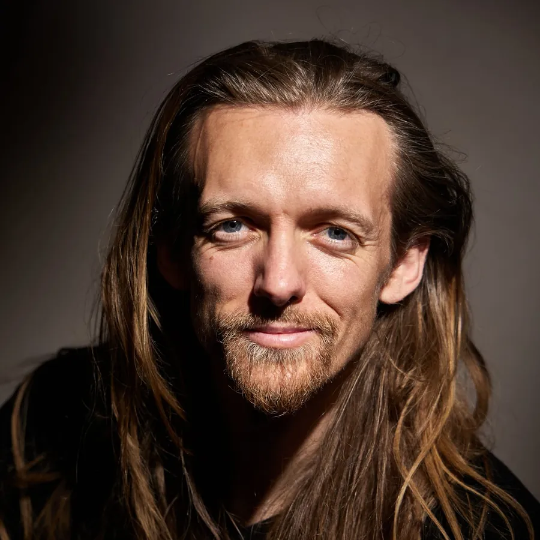

David Lesage
Percussionniste de formation classique devenu l’un des rares musiciens à jouer le handpan électronique sur scène. Il vient du jazz — quatre ans au collège de jazz de Marciac, quatre ans au Conservatoire de Toulouse, prix de batterie — et en a gardé un sens du rythme millimétré, qu’il applique aujourd’hui à des instruments qui n’ont pas de partition. Ses trois terrains : le handpan, acoustique et numérique, dont il est ambassadeur officiel de la marque Neotone ; la voix, cinq octaves, en cinq langues ; et les instruments à peau et à cordes d’Afrique de l’Ouest. Ses instruments sont accordés en La 432 Hz — une couleur, pas un dogme : le duo se joue aussi en 440.A classically trained percussionist who became one of the very few musicians playing the electronic handpan on stage. He comes from jazz — four years at the Marciac jazz college, four years at the Toulouse Conservatoire, with a drumming prize — and kept from it a millimetric sense of rhythm, which he now applies to instruments that have no written score. His three grounds: the handpan, acoustic and digital, for which he is an official Neotone ambassador; the voice, five octaves across five languages; and the skin and string instruments of West Africa. His instruments are tuned to A 432 Hz — a colour, not a doctrine: the duo plays at 440 just as happily.
- Sept pays de scène : France, Hongrie, Suisse, Belgique, Grèce, Espagne, Côte d’IvoireSeven countries on stage: France, Hungary, Switzerland, Belgium, Greece, Spain, Ivory Coast
- Le Grand Rex, Paris, devant 2 700 personnesLe Grand Rex, Paris, in front of 2,700 people
- Sziget Festival, Budapest, en 2022 et 2023 ; Everness Festival, HongrieSziget Festival, Budapest, in 2022 and 2023; Everness Festival, Hungary
- Vingt et une dates à Jazz in Marciac, sur sept éditionsTwenty-one dates at Jazz in Marciac, over seven editions
- Première partie d’Amadou & Mariam, septembre 2022Opening for Amadou & Mariam, September 2022
- The Voice saison 11 (TF1), diffusé le 12 février 2022The Voice season 11 (TF1, France), broadcast 12 February 2022
- Ambassadeur officiel et bêta-testeur du handpan électronique Neotone depuis 2023Official ambassador and beta-tester of the Neotone electronic handpan since 2023